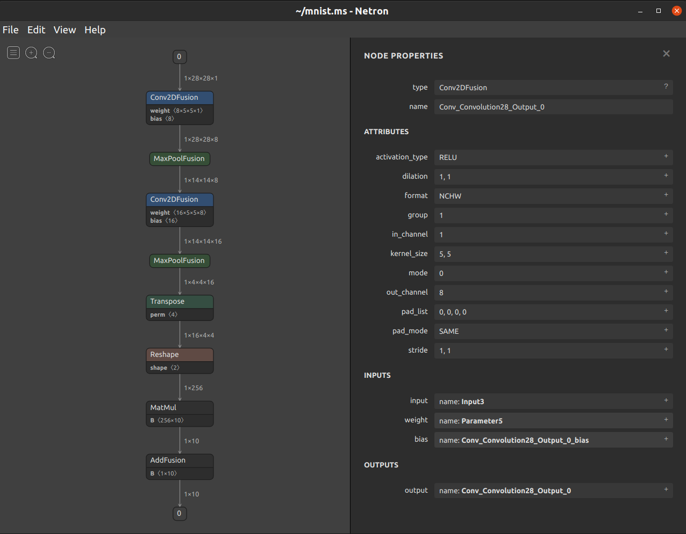

可视化工具

概述
Netron是一个基于Electron平台开发的神经网络模型可视化工具，支持许多主流AI框架模型的可视化，支持多种平台（Mac、Windows、Linux等）。Netron支持MindSpore Lite模型，可以方便地查看模型信息。如下图所示，使用Netron加载.ms模型后，可以展示模型的拓扑结构和图、节点的信息等。

功能列表
支持加载
.ms模型，要求MindSpore版本>=1.2.0;支持查看子图；
支持拓扑结构和数据流
shape的展示；支持查看模型的
format、input和output等；支持查看节点的
type、name、attribute、input和output等；支持结构化的
weight、bias等数据的查看与保存;支持可视化结果导出为图片保存。
使用方式
ms模型的支持代码已经合入官方库。Netron的下载地址为 https://github.com/lutzroeder/netron/releases/latest, 作者不定期更新并发布Release版本。用户按照以下方式安装Netron，将模型拖入窗口即可打开。
macOS: 下载
.dmg文件或者执行brew cask install netronLinux: 下载
.AppImage文件或者执行snap install netronWindows: 下载
.exe文件或者执行winget install netronPython服务器：执行
pip install netron安装Netron，然后通过netron [FILE]或netron.start('[FILE]')加载模型浏览器：打开 https://netron.app/
开发调试
使用开发版本
步骤1：通过git clone https://github.com/lutzroeder/netron克隆一份源码
步骤2：进入netron目录，执行npm install
步骤3：执行make build进行编译，在./dist路径下将生成可执行程序
使用Javacript调试模型
在调试模型时，在netron文件夹下，先在./test/models.json中添加调试模型的信息，然后使用node.js调试./test/model.js脚本即可。